Voices of a Nation
Half a million speeches from the Italian Parliament, 1900–1924
Every word spoken in Italy’s Parliament for 24 years
A complete digital archive of parliamentary debates from one of the most turbulent periods in Italian history — from the assassination of King Umberto I to the rise of Fascism.
Produced by Maurizia Di Buono & Sergio Galletta · ETH Zürich
What is this?
We digitised, cleaned, and structured over 460,000 individual speeches from the official stenographic records of the Italian Chamber of Deputies — and linked each one to the person who spoke it.
Between 1900 and 1924, Italy’s parliament debated war and peace, labour rights, colonial ambitions, universal suffrage, and political violence. These are the actual words of the people who shaped modern Italy — socialists, liberals, nationalists, and fascists arguing on the floor of the Chamber.
Voices from the archive
What the original documents look like
The raw material is thousands of scanned pages from the printed stenographic reports — century-old documents that were read by OCR software and carefully cleaned.
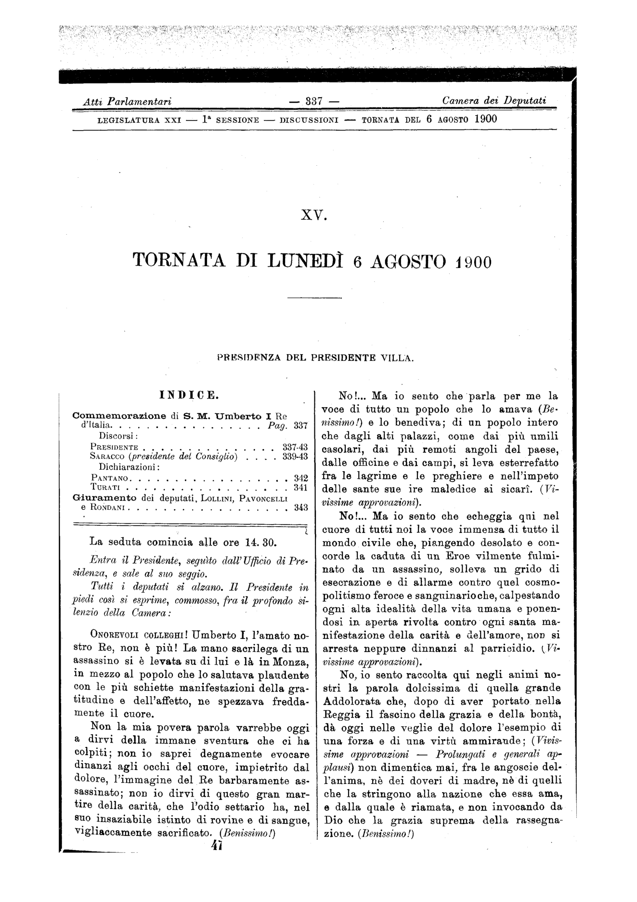
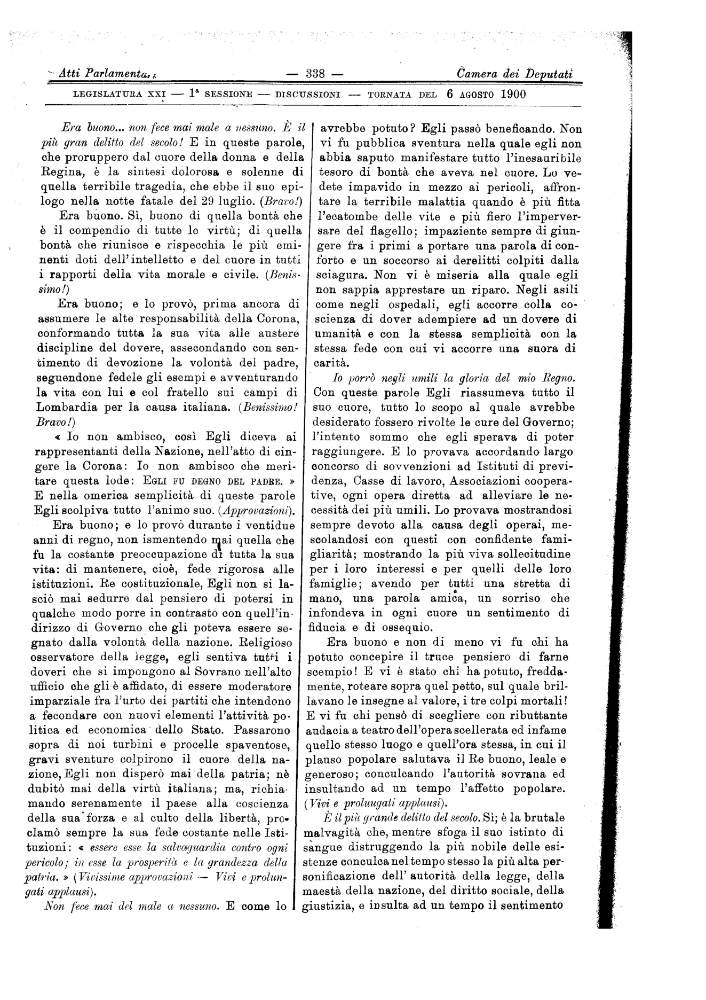
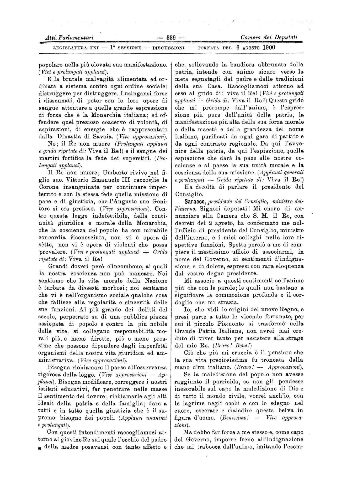
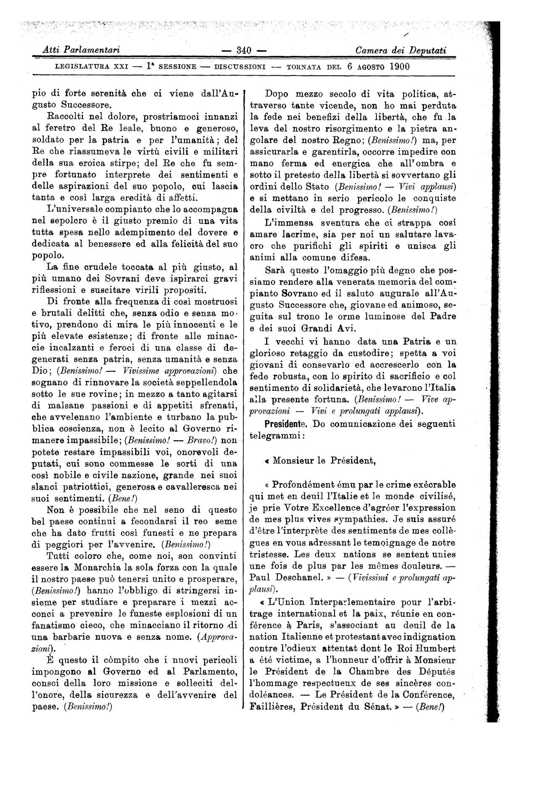
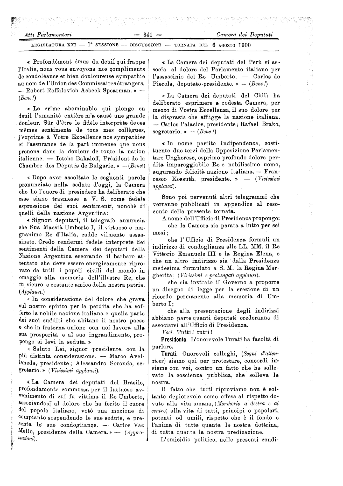
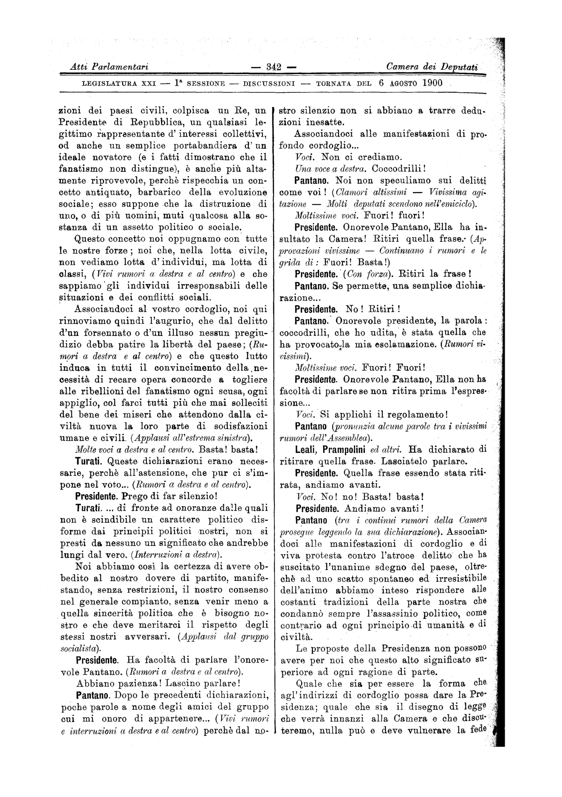
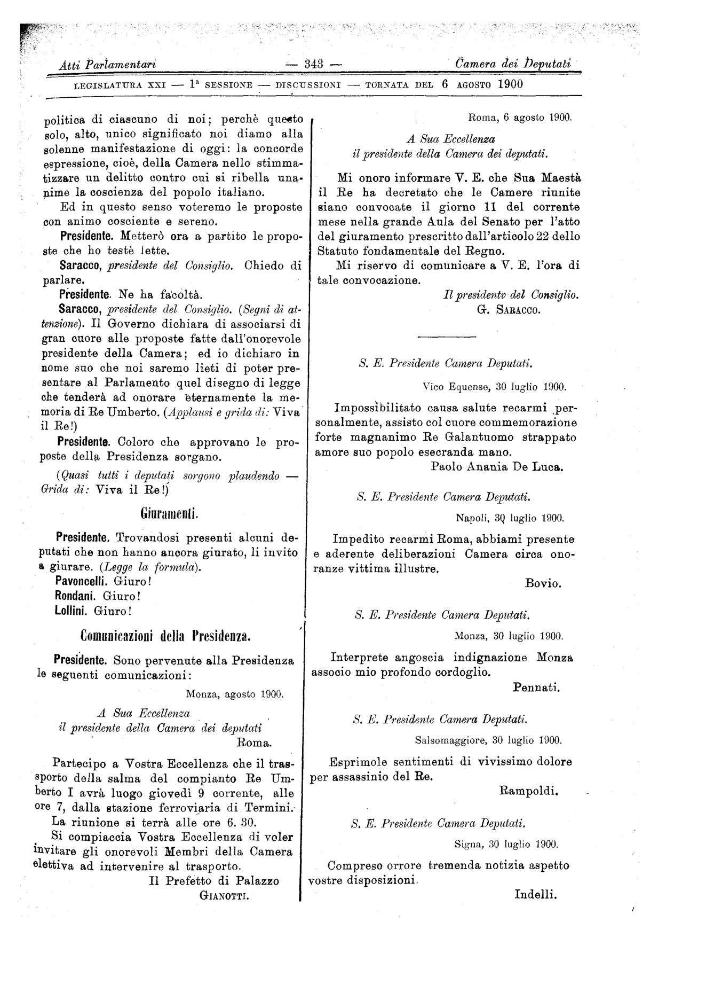
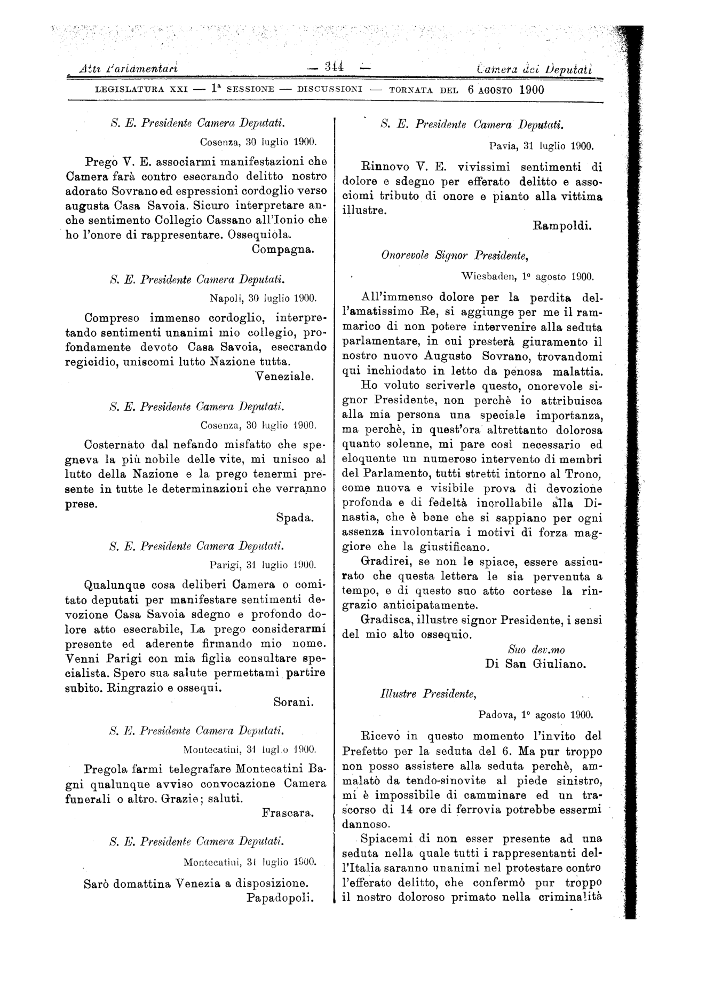
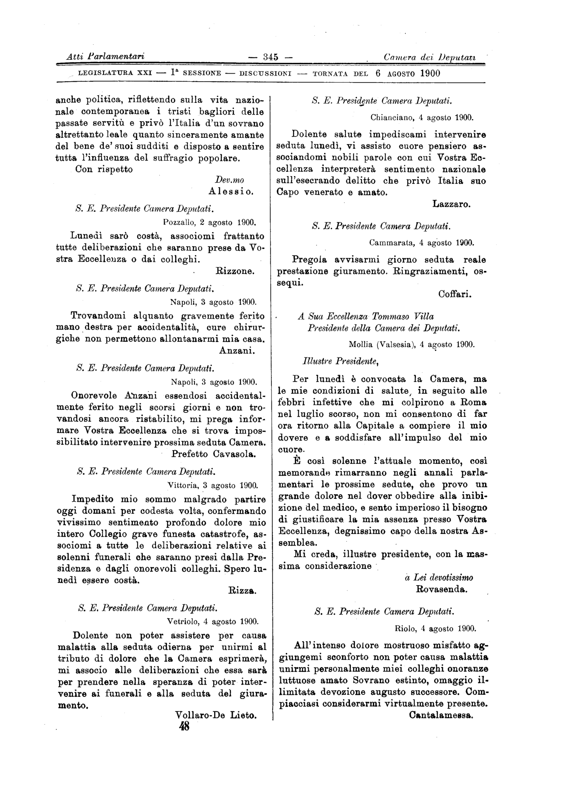
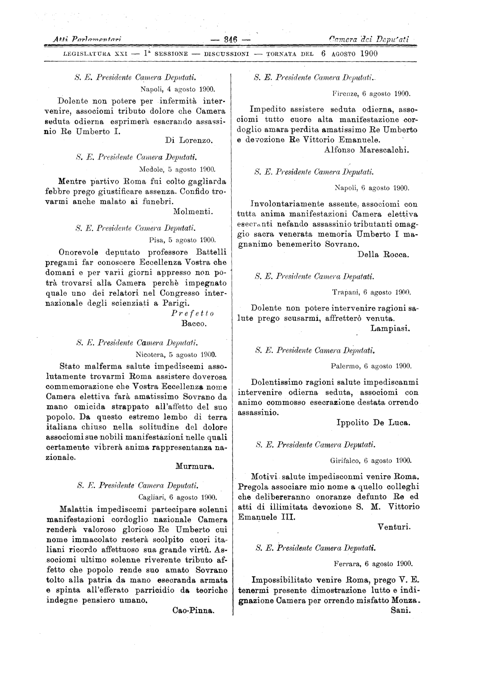
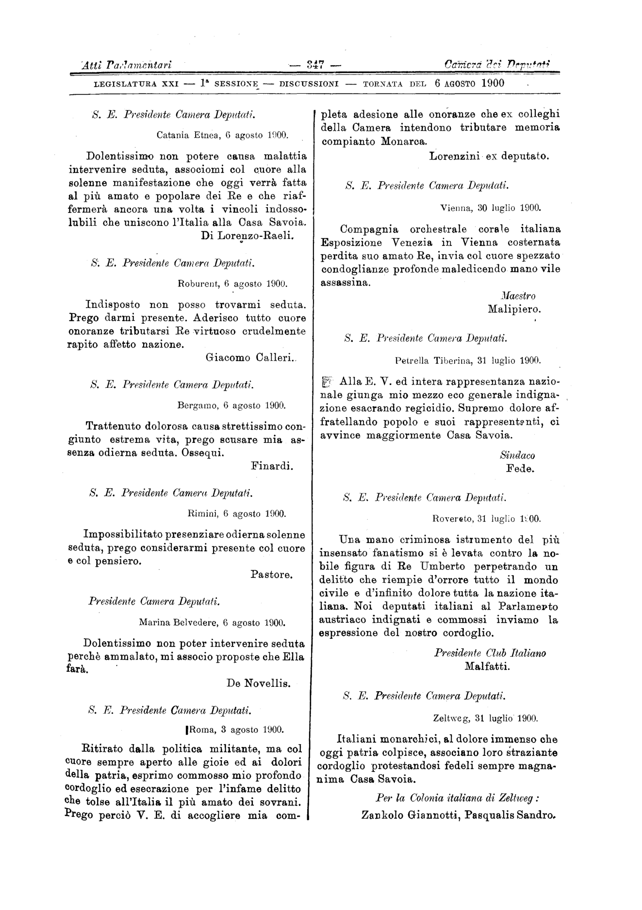
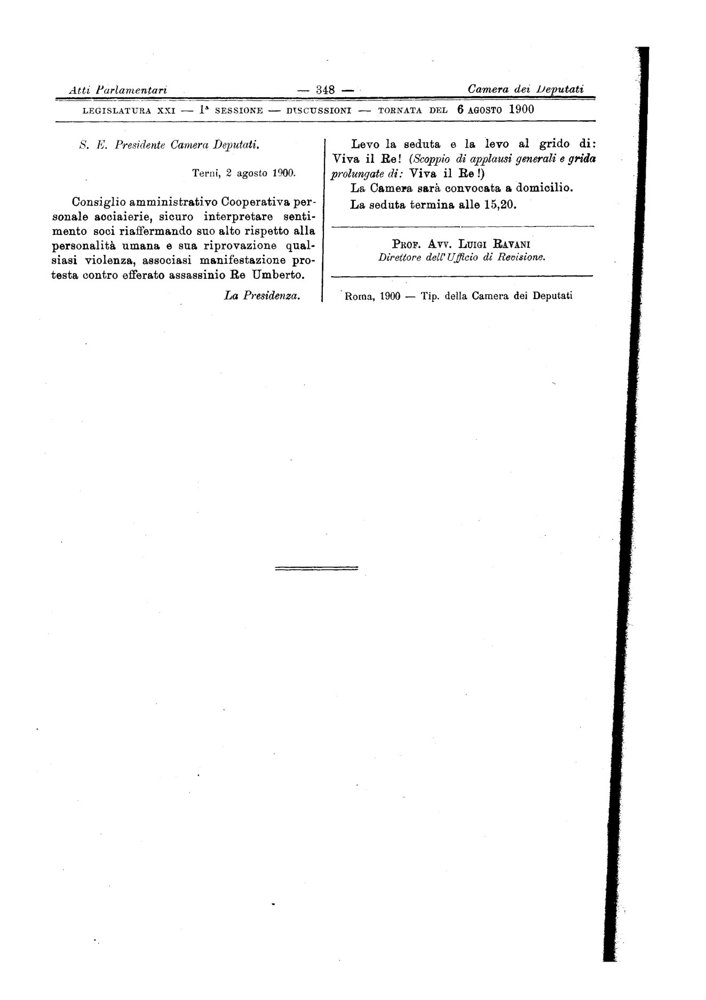
Session 15, Legislature 21 (6 August 1900) — the session where Turati spoke on the assassination of King Umberto I. All 12 pages. Original PDFs from the historical archive of the Camera dei Deputati.
What we know about each speech
Every speech is linked to rich personal information about the person who gave it.
Who spoke
Full name, gender, and institutional role — minister, president of the chamber, secretary, rapporteur...
Where they came from
Place of birth, mapped to today’s Italian municipalities, provinces, and regions
When they were born
Date of birth — enabling generational analysis across different cohorts of deputies
Their politics
Party affiliation, political group, and the electoral constituency they represented
Government service
Whether they served in government, in which cabinet, what role, and exact dates
The speech itself
Full text, date, session number, legislature, and who was presiding that day
Historical Timeline
The speeches span an era of profound transformation — from restricted suffrage through world war to the collapse of democracy.
How Italy was built
Drag the slider to see how the Italian state expanded from the small Kingdom of Sardinia to the unified nation. The regions that were incorporated last — often through military force — are where many of our deputies grew up.
The Corpus
462,555 speeches from 6 legislatures, each linked to the deputy who spoke them.
| Legislature | Period | Speeches | Deputies | Govt roles |
|---|---|---|---|---|
| 21 | 1900–1904 | 80,036 | 579 | 117 |
| 22 | 1904–1909 | 102,528 | 596 | 159 |
| 23 | 1909–1913 | 98,551 | 600 | 116 |
| 24 | 1913–1919 | 85,586 | 539 | 292 |
| 25 | 1919–1921 | 40,804 | 519 | 143 |
| 26 | 1921–1924 | 55,050 | 590 | 408 |
| Total | 462,555 | 3,423 | 1,235 |
Personal information for each deputy
Identity
Full name, gender, unique identifier linked to the official Camera dei Deputati database and Wikidata
Birth
Date and place of birth, mapped to today’s municipalities, provinces, and regions
Politics
Party, electoral constituency and location
Government
Cabinet, role (minister, undersecretary...), exact dates of service
Data coverage by legislature
| Leg 21 | Leg 22 | Leg 23 | Leg 24 | Leg 25 | Leg 26 | |
|---|---|---|---|---|---|---|
| Date of birth | 98% | 94% | 97% | 96% | 98% | 92% |
| Place of birth | 99% | 94% | 94% | 97% | 98% | 91% |
| Party affiliation | 27% | 88% | 86% | 95% | 100% | 95% |
| Province & region | 94% | 91% | 92% | 93% | 95% | 94% |
Legislature 21 has low party coverage because the Wikipedia source for that period lacks structured data.
The Big Picture
The structural patterns in 24 years of parliamentary debate. Data covers sessions from 1900 to 1923.
What they obsessed about
The share of speeches mentioning key topics, year by year. The lines trace the obsessions of an era: war swallows everything from 1915 to 1918, fascism appears from nothing in 1920, suffrage spikes in 1912 and 1919.
The rise and fall of “patria”
How often do deputies invoke patria (fatherland), libertà (liberty), nazione (nation), or popolo (the people)? The language of national identity triples during WWI, then collapses. “Libertà” surges in 1919 as democracy expands — and again in 1923, this time in desperation.
The emotional temperature
The stenographers wrote down every audience reaction: (Applausi), (Interruzioni), (Rumori), (Si ride). Applause surges tenfold after 1918. Interruptions peak during the Biennio Rosso (1919–20). Parliament becomes a stage, then a battlefield.
The mood of parliament
We track three emotional registers across all speeches: anger (vergogna, scandalo, violenza, menzogna...), hope (progresso, giustizia, riforma, civiltà...), and fear (pericolo, minaccia, anarchia, rivoluzione...). Fear overtakes hope after 1919.
A generation takes over
The average age of speakers drops 13 years between 1918 and 1923. After WWI, young veterans flood the Chamber with radicalism and impatience. Mussolini is 38 when he becomes Prime Minister.
The death of debate
Average unique speakers per session. Democracy means many voices. The number peaks during the war (95 speakers/session), then collapses after 1922 — fewer people dare to speak.
Where did speakers come from?
Regions colored by total deputies born there. Circles show provinces — bigger = more deputies. Hover for details.
Absolute count
Per 100,000 inhabitants
Dualities: left vs right, south vs north
Who was angrier?
Anger words (vergogna, scandalo, violenza, menzogna...) by political alignment. The left is consistently angrier. But watch the right after 1920: Fascism’s anger catches up.
What did the South talk about?
South vs North deputies on key topics. The South talks about the “questione meridionale” three times more. On war and labour, surprisingly similar.
The angriest deputies
Anger words per 100 speeches (min 100 speeches). Socialists dominate.
The most interrupted
Interruption rate per 100 speeches (min 50). The provocateurs were not the most famous.
Women in a men’s parliament
When they talked about women
Share of speeches mentioning women. Peaks in 1912 (excluded from universal suffrage) and 1919–20 (after wartime factory work). Then silence.
The suffrage debate that never happened
Speeches mentioning women’s right to vote. At most 51 in a single year. The left discussed women twice as much as the right.
Curiosities
The longest speech
13,125 words by Ettore Reina (1 August 1920) — nearly a novella, in one session during the Biennio Rosso.
The shortest
“Ma io qualche volta ci sono stato!” — Piero Foscari, 34 characters, 9 September 1919.
Explore the Data
A 5% random sample from the corpus — 22,751 speeches. Filter by topic, read the originals. Click on any speech to expand the full text.
Loading 50,000 speeches...
| surname | first name | date | leg | speech | party | place of birth | province | region |
|---|
4 more batches available
The Research
Half a million speeches are not just data — they are a window into how a society thinks, argues, and breaks apart.
Why this matters
Between 1900 and 1924, Italy compressed into 24 years what most countries experience over a century: the expansion of democratic participation, a devastating world war, the rise of revolutionary movements, and the collapse of democracy itself. The deputies who spoke in this chamber were not just politicians — they were the voices of a society in transformation.
No structured, machine-readable corpus existed for this period. These speeches open new questions across disciplines:
For economists
How do electoral incentives shape political language? When 5 million new voters enter the system overnight (1912 reform), do representatives change what they say and how they say it?
For political scientists
What does polarisation look like in a parliament that is about to die? Can we measure the rhetorical distance between groups as democracy collapses?
For historians
What did deputies actually say about the Southern Question, colonial wars, women’s rights, or labour strikes? The full text makes it possible to move beyond anecdotes to systematic evidence.
For sociologists & psychologists
These deputies are mirrors of their society — shaped by where they grew up, the violence they witnessed, the culture they inherited. Their words reveal collective attitudes, moral values, and the emotional texture of an era.
The dual nature of parliamentary speech
Every deputy in this corpus can be read in two ways:
As a mirror of society
Deputies from Southern provinces where Italian unification was imposed through military force carry that memory into the Chamber. Deputies from industrialising Northern cities speak the language of labour reform. Their words reveal what their communities were thinking — the fears, aspirations, and grievances of millions of people who left no written record.
As a strategic political actor
Deputies respond to electoral incentives. When the electorate triples in 1912, they must adapt. When Fascist squads burn down union halls, they choose to denounce, accommodate, or stay silent. Their rhetorical choices reveal how democratic institutions are defended — or abandoned.
A natural experiment: the 1912 suffrage reform
In 1912, Italy expanded its electorate from 3.3 million to 8.65 million voters — while leaving electoral districts and rules unchanged. This creates a rare opportunity: the same deputies, representing the same districts, suddenly face a radically different electorate. The expansion was not uniform across districts, allowing us to compare how deputies adapted their rhetoric depending on how many new voters entered their constituency.
The long shadow of state-formation violence
We link each deputy to the intensity of political violence in their birthplace during Italian unification (1861–1870). The “Great Brigandage” — a brutal conflict between the new Italian state and Southern resistance — left deep scars. Deputies who grew up in provinces marked by this violence may carry different conceptions of the nation, the state, and its legitimacy. We ask: do these historical experiences shape how political elites talk about national unity, decades later? And does democratisation amplify or dampen these legacies?
Key references
Gentzkow, Shapiro & Taddy (2019). “Measuring Group Differences in High-Dimensional Choices.” Econometrica.
Spirling (2016). “Democratization and Linguistic Complexity.” Journal of Politics.
Larcinese (2024). “Enfranchisement and Representation: Italy 1912.” Journal of Politics.
Lecce, Ogliari & Orlando (2022). “State Formation, Social Unrest and Cultural Distance.” Journal of Economic Growth.
Hansen, McMahon & Prat (2018). “Transparency and Deliberation Within the FOMC.” QJE.
Ash, Chen & Naidu (2025). “Ideas Have Consequences.” QJE.
How It Was Built
From century-old printed pages to a structured digital corpus, in five stages.
Original documents
The starting point is the official Atti Parlamentari: scanned PDF copies of the original printed stenographic reports from the Italian Parliament’s historical archive. One PDF per parliamentary session, with double-column layouts, complex formatting, and inconsistent headers.
PDF to images
Each PDF page is converted into an individual image. Filenames encode the legislature, session number, and date (e.g. leg_r24_sed001_19131128_p0001.png). When automatic date extraction fails, dates are corrected manually.
AI-powered text extraction
An AI language model reads each page image and extracts structured speech data: who is speaking, their institutional role, and the full text of what they said. Standard text extraction tools couldn’t handle the historical double-column layout and embedded speaker transitions, so we used a custom approach with a large language model.
Post-processing & cleaning
Automated checks catch extraction errors. Written responses (marked “RISPOSTA SCRITTA”) are matched to their actual author by detecting the signature at the end of the text. Sessions with parsing failures are re-processed. Speeches are then cleaned, merged, and deduplicated across a 7-phase pipeline.
Deputy database & linking
Personal information about each deputy is assembled from 5 independent sources (official Camera database, Wikipedia, Wikidata, storia.camera.it, and ISTAT geographic data). Each speech is then matched to its speaker — handling name variants, compound surnames, and people who share the same last name. Details in Linking Speeches.
Cleaning pipeline (7 phases)
| Phase | What it does | Impact |
|---|---|---|
| 1–2 | Extract names from responses, merge overlaps, resolve “President” to actual name | 103,890 presidencies resolved |
| 3 | Recover missing names from original PDFs + OCR correction | ~40,000 additional fixes |
| 4 | Fuzzy matching: normalise accents, hyphens; compound surnames | 72% → 85% match |
| 5 | Link government roles (cabinet, position, dates) | 102,847 speeches enriched |
| 6–7 | Additional cleaning + homonym-safe re-matching | Final: 85.2% (all correct) |
Linking Speeches to People
Names can be misspelled by OCR, some deputies share the same surname, and some speakers aren’t even deputies. Four steps handle this, and if any step is ambiguous, the speech stays unmatched — never assigned to the wrong person.
Full name
“Sonnino Sidney” → matches by surname + first name, resolving shared surnames.
Unique surname
“Giolitti” → only one in that legislature. Safe match.
Compound surname
“Di Scalea” matches “Lanza di Scalea” via separate lookup.
Fuzzy
Normalise accents, hyphens, OCR variants. Always homonym-safe.
Match rate by legislature
Why 14.8% remain unmatched
Quality & Accuracy
Human annotators verified a random sample of sessions against the original printed documents, checking six dimensions of quality.
Present in PDF
Correct speaker
Exact text match
Text completeness
Signature present
Missing rate
Sources
Where the data comes from.
Primary source
Atti Parlamentari — Resoconti Stenografici
Official verbatim transcripts of the Chamber of Deputies, Kingdom of Italy. Digitised from the historical archive at storia.camera.it. Original PDF scans freely available.
Deputy information
| Source | What it provides |
|---|---|
| Camera dei Deputati (RDF) | Official records: name, constituency, titles, gender |
| Camera dei Deputati (SPARQL) | Government roles, positions, dates |
| Wikipedia | Party affiliation, constituency |
| Wikidata | Biographical data, cross-database links |
| storia.camera.it | Historical deputy lists |
| ISTAT | Maps historical place names to modern regions |
Contact
Interested in the data? Have questions about the corpus, the methodology, or wants to collaborate? Get in touch.